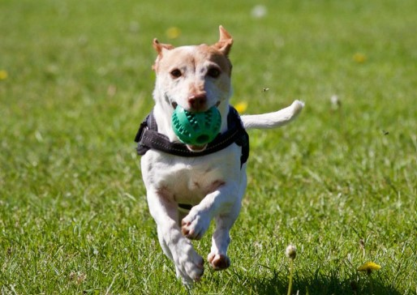
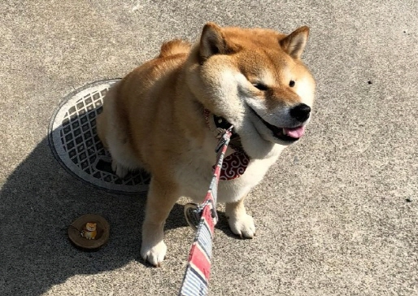
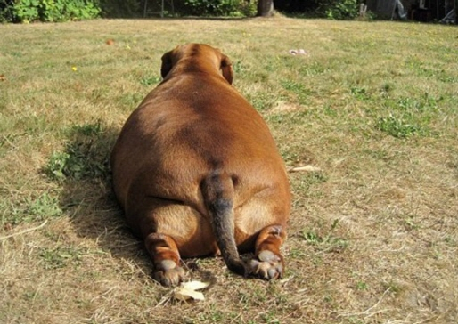

|  | 1. 매일 운동하기운동은 강아지의 체중 관리에도 효과적일 뿐만 아니라, 정신을 자극하는 역할을 합니다.또한, 운동 패턴을 일정하게 유지하는 것은 강아지에게도 나에게도 건강한 에너지를 갖게 합니다. 만약, 일주일 내내 강아지를 데리고 공원에 산책을 나갈 시간이 없다면? 소소하게나마 강아지를 데리고 가까운 동네를 한 바퀴 도는 것도 좋아요! |
|  | 2. 견종 별 특성 고려하기내가 키우는 견종의 특징을 파악해야합니다. 견종에 따라 외모도 다르지만 성격,건강상 유의사항 및 운동량 등많은 점이 다르기 때문입니다. 특히, 일상적인 산책을 위해 견종별 운동 강도와 운동 시간을 먼저 파악해야합니다. 산책 시에 강아지가 과도하게 헐떡거리거나, 도중에 바닥에 주저앉거나, 무기력 증세를 보인다면 즉시 멈추고 강아지를 쉬게 해야 합니다!. |
|  | 3. 비만은 금물강아지의 귀여운 모습에 대부분 주인들은 마음이 약해져서 이것저것 많이 주게 됩니다.결국 소화불량, 영양 불균형과 함께 비만이 오고 식탐과 편식 등 나쁜 식습관까지 생기게 됩니다. 뿐만 아니라 여러가지 질환까지 생길 수 있기 간식이나 음식물은 정해진 시간과 양에 맞춰서 주도록 하고 특히 간식을 지나치게 많이 주지 않도록 한다. |